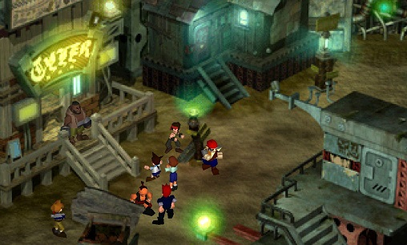
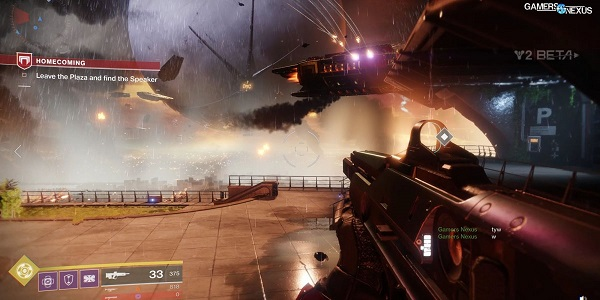
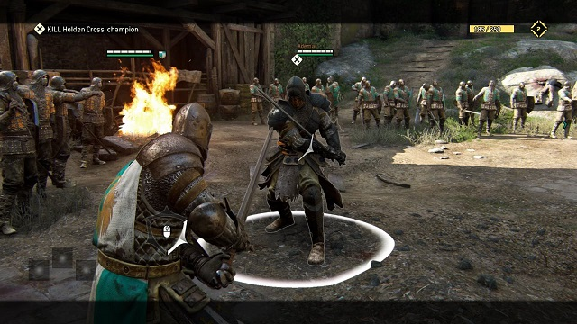

3D Graphics
With the increase of processing power and memory availability of computers, 3D graphics readily became accessible to the gaming industry. Where 2D graphics used a "flat" image with only horizontal and vertical dimensions, 3D graphics added a third dimension, depth. Where 2D graphics uses pixels placed side by side to create images, 3D graphics uses a 3D coordinate system and vector graphics to create shapes and images. This gives 3D graphics a more true to reality and lifelike appearance than its predecessors.
Fixed 3D

Fixed-3D is a type of 3D graphic style which has a game world where the forground objects like game characters are rendered in real time, but background images are static or fixed. this style gave even systems with minimal hardware the ability to render 3D objects. However, this made it so that the players frame of reference stayed the same at all times. Because the backgrounds of these types of games were pre-rendered 2D images, developers would only texture the visible side leaving the other side un textured thereby speeding up rendering times. Some popular examples of this graphic style include The Legend of Zelda: Ocarina of Time, Final Fantasy, Alone in the Dark, Resident Evil, Parasite Eve, and many others.
First Person

This graphical style renders the world in the viewpoint of the players character. Thus, the player cannot see the avatar's body thought some show the weapons or hands. This viewpoint is also frequently used to represent the perspective of a driver of a vehicle in a rancing game. This allowed programers to forgo implementing complicated manual or automated camera control schemes. Some popular examples of this graphic style include Mirror's Edge, Theif, The Elder Scrolls, Minecraft Portal, Fallout, and every first person shooter you can think of.
Third Person

This graphical style renders the world from a view point some distance away from the player's character, usually from behind and slightly above. This allows the player to see the actions of the avatar and is commonly seen in action and adventure games. However, this style poses a difficulty for programmers in the case of camera controls. Objects blocking the avatar, jumping cameras, going through walls, and controlling the camera and avatar simultaneously are some examples that programmers must work through with this graphical style. Some popular examples of this graphic style include Grand Theft Auto, World of Warcraft, God of War, For Honor, The Witcher, Dark Souls, Monster Hunter, and many others.